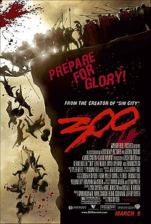

- Interestelar
- Carros
- Oppenheimer
- 300
- Avatar

Ele conta a história de uma equipe de astronautas que viaja através de um buraco de minhoca à procura de um novo lar para a humanidade

Tudo começa com a final da Taça/Copa Pistão, a maior competição automobilística do país, onde três carros disputam o cobiçado troféu: Relâmpago/Faísca McQueen, um corredor novato; "O Rei" ou "Strip Weathers", um respeitado veterano; e Chick Hicks, um grande trapaceiro.

Cillian Murphy como J. Robert Oppenheimer: o físico teórico que está entre os creditados como o "pai da bomba atômica" por seu papel de diretor do Laboratório Los Alamos no Projeto Manhattan – o empreendimento da Segunda Guerra Mundial que desenvolveu as primeiras armas nucleares.

Em 480 a. C., um ano após a Batalha das Termópilas, Dilios, um hoplita do exército espartano, conta sua história descrevendo a vida de Leônidas I desde a infância até a realeza por meio da doutrina espartana.